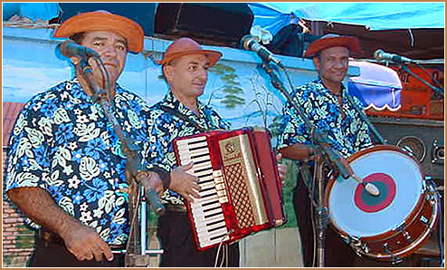
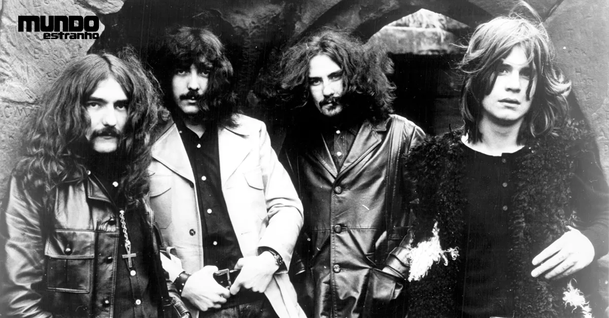

ROCK:
Rock é um termo abrangente que define um gênero musical de música popular que se
desenvolveu durante e após a década de 1950, estilo musical marcado por uma música simples, tocada
com apenas três ou quatro acordes.
|
.jpeg) |
SAMBA:
Samba, também conhecido como samba urbano carioca ou simplesmente samba carioca,
é um gênero musical brasileiro que se originou entre as comunidades afro-brasileiras urbanas do Rio
de Janeiro no início do século XX.
|
 |
SERTANEJO:
Música sertaneja é um gênero musical do Brasil produzido a partir da década de
1910 por compositores urbanos e rurais. As músicas podem ser chamadas genericamente de modas e
emboladas e o som da viola é predominante
|
 |
REGGAE:
Reggae é um gênero musical criado na Jamaica do fim da década de 1960, a partir
dos gêneros ska e rocksteady. Embora por vezes seja usado num sentido genérico para referir-se à
maioria dos tipos de música jamaicana.
|
|
RAP:
Rap é um discurso rítmico com rimas e poesias, que surgiu no final do século XX
entre as comunidades afro-descendentes nos Estados Unidos. É um dos cinco pilares fundamentais da
cultura hip hop, de modo que se chame metonimicamente hip hop.
|
|
POP:
A música pop é um gênero da música popular que se originou durante a década de
1950 nos Estados Unidos e Reino Unido. A música pop é eclética, e muitas vezes incorpora elementos
de outros estilos, como o urban, dance, rock, música latina, soul e country.
|
|
ELETRONICA:
Podemos classificar como música eletrônica toda música que é executada ou
modificada por meios digitais e/ou tecnológicos, como sintetizadores, softwares e aplicativos,
gravadores digitais, controladores MIDI, entre outros.
|
|
FUNK:
O funk é um gênero musical que se originou em comunidades afro-americanas em
meados da década de 1960, quando músicos afro-americanos criaram uma nova forma de música rítmica e
dançante através da mistura de soul, jazz e rhythm and blues.
|
|
FORRO:
Música da América Latina inclui os estilos musicais de todos os países da América
Latina e está distribuída em diversas variedades. Faz parte desde a simples música do norte do
México à sofisticada Habanera de Cuba, bem como as sinfonias de Heitor Villa-Lobos e os simples sons
da Quena, uma flauta andina.
|
 |
HEAVY METAL:
Heavy metal é um gênero do rock que se desenvolveu no final da década de 1960 e
no início da década de 1970, em grande parte no Reino Unido e nos Estados Unidos.
|  |
K-POP:
K-pop é um gênero musical originado na Coreia do Sul, que se caracteriza por uma
grande variedade de elementos audiovisuais.
| |